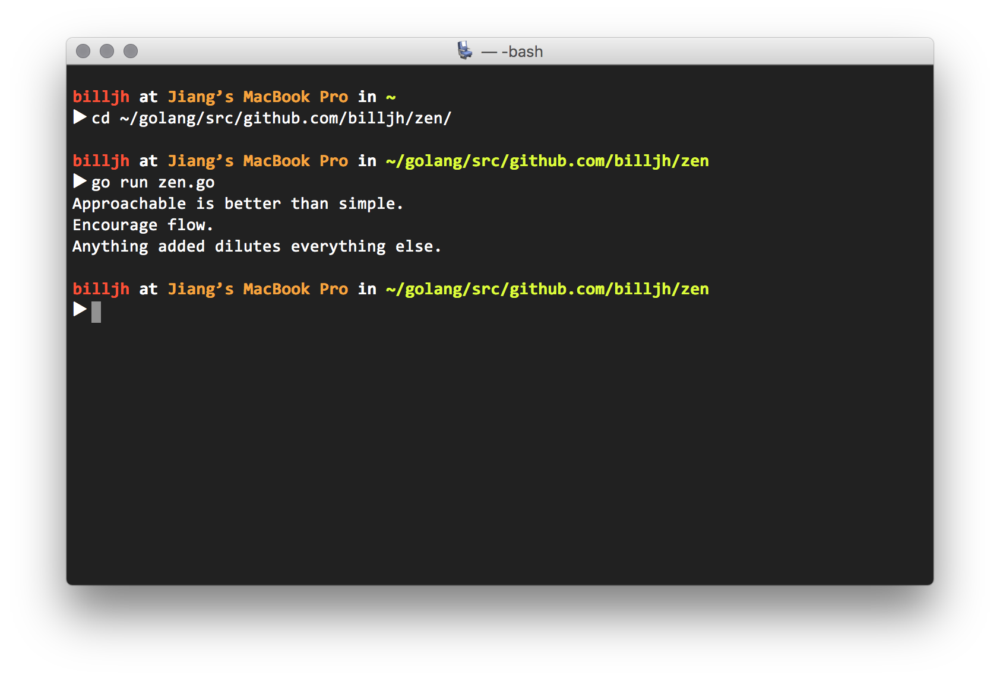
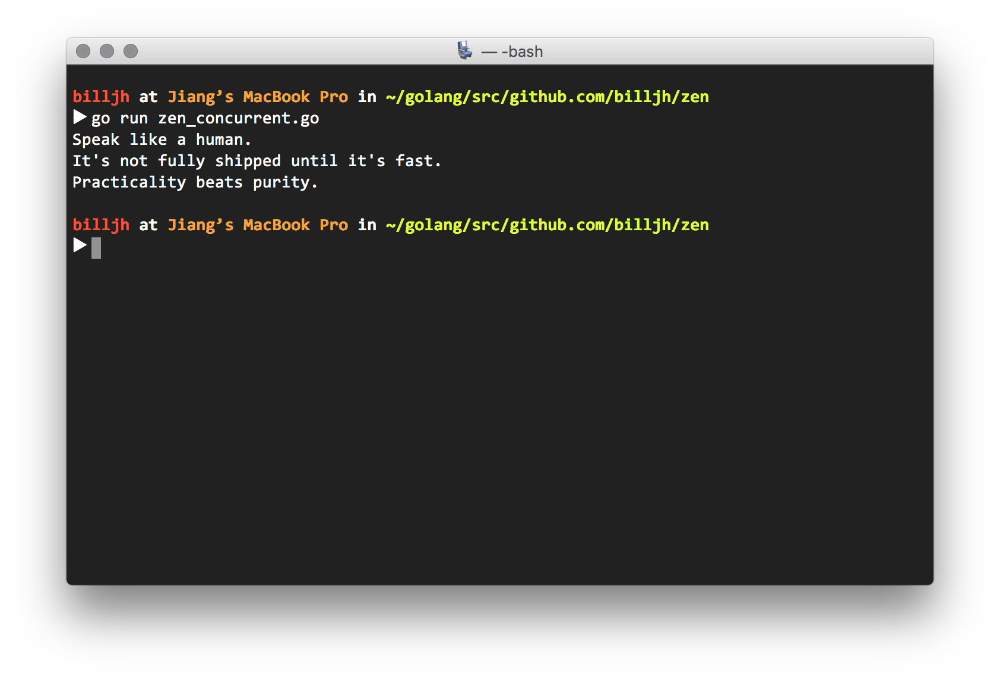

I got this interesting interview question from my friend last week.
Get three distinct messages from api.github.com/zen. Extra points for concurrency.
Solution without Concurrency
At first glance, I found it not hard to come up with a solution that calls the API repeatedly until we get three distinct responses. Just need to take care of error handling and duplication. So I tried with Golang:
package main |
On my terminal I ran go run zen.go and it printed three lines of words one-by-one like
Approachable is better than simple.
Encourage flow.
Anything added dilutes everything else.
My piece of code simply works. Then I wanted to bring it to the next level: making it concurrent.

Concurrency in Go
In order to write concurrent Go program, one needs to understand
- Communicating Sequential Processes (wiki) model which Go’s ideas about concurrency are based on,
- concurrency primitives goroutine and channel, and
- the concept of share memory by communicating instead of communicate by sharing memory.
Goroutine
A goroutine is like a lightweight thread with only 2 KB overhead. It is practical to create hundreds of thousands of goroutines (quote). Upon creating goroutines in your program, Go runtime will take care of scheduling and multiplexing onto system threads.
Channel
Channels connect goroutines like pipes. Or message queues. Each channel can have multiple senders and receivers.
Channels can be buffered. Unbuffered channel will block senders until a receiver has received the value. Buffered channel can store messages up to the buffer size specified.
Solution with Concurrency
With those in mind, I came up with this solution using goroutines as workers pool and channels as queues to store jobs and immediate results.
package main |
I created two channels, buffered jobs and unbuffered resp.
A worker is goroutine that both receive and send jobs (when anything failed) to the jobs channel, and send response to resp channel. I created three workers for parallelism in this case.
Another goroutine I created checks for duplication of responses and print distinct messages to console. On duplication, it will send a new job to jobs and later workers will try get a different response.
I also used sync.WaitGroup to make main goroutine wait until all jobs are done.
On my terminal I ran go run zen_concurrent.go and three lines appeared almost at the same time:
Speak like a human.
It’s not fully shipped until it’s fast.
Practicality beats purity.
I didn’t measure but total running time was reduced to around one third, thanks to parallel workers.
My first try with Go concurrency was successful and fun.